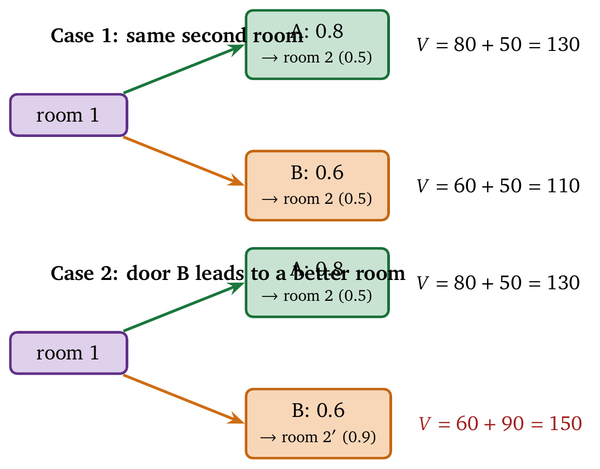
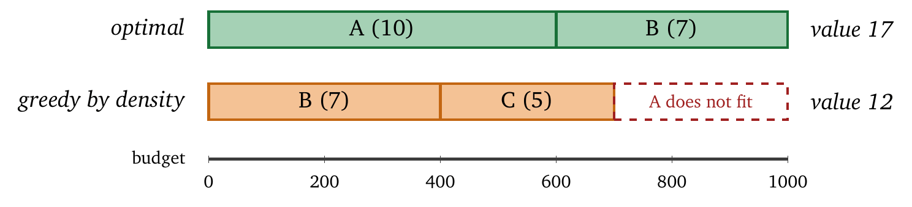
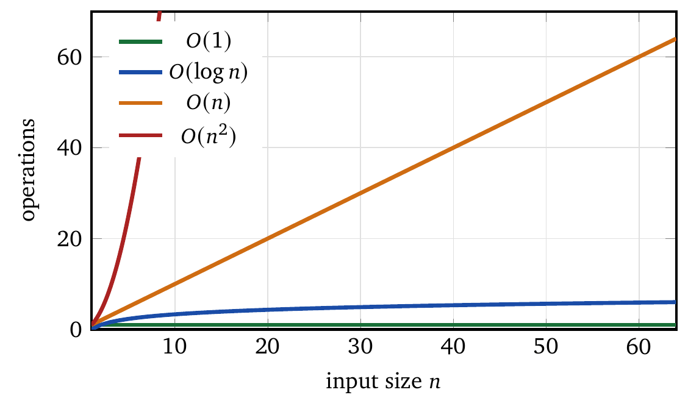

« Terms and Operational Definitions | Contents | A Short History of Agents, Control, and Commitment »
Part I: FoundationsChapter 2. Mathematical Foundations
This chapter assembles the mathematical tools that the rest of the book depends on. There are five of them: sequential decision making, constrained optimization, probability and expectation, complexity analysis, and a small set of data structures. Each section opens with a puzzle that can be worked in one’s head, develops the idea on a small example, and only then states the formalism. A reader for whom a section’s puzzle is already routine can move to the next section; nothing here is required twice.
Each tool earns its place by reappearing later. Sequential decision making underlies the action-selection and speculation machinery of Chapters 7 and 8. Constrained optimization is the language of Chapters 5 through 7. Probability and expectation supply the thresholds of Chapter 9. Complexity analysis and data structures decide whether the memory and retrieval designs of Chapters 10 and 11 are practical at all.
The chapter that follows this one, on the history of the ideas, is the one place in the book that can be read out of order. It supplies context, and nothing later depends on it.
2.1 Sequential Decision Making
2.1.1 The Puzzle
Consider the following game. You stand in a room with two doors. Behind one door is $100; behind the other is nothing. You choose a door, collect whatever is behind it, and enter a new room, which also has two doors. The game continues for ten rooms.
The doors are labeled, and the labels carry information. A door labeled A leads to $100 with probability 0.8. A door labeled B leads to $100 with probability 0.6, and the room it leads to always has better odds than the room you are in.
What strategy should you follow?
A player who thinks one room at a time will always choose A, since 0.8 exceeds 0.6. That reasoning ignores what happens afterward. Door B leads to better rooms, so the choice with the worse immediate payoff may produce the better total. This is the structure of sequential decision making: the best action now depends on what will happen later. Agents meet it constantly. A web search costs time now and supplies information for later; a cheap model saves money now and may require an expensive correction later.
2.1.2 States, Actions, and Transitions
We now make the game precise. At any moment the player is in some situation, which we call a state. In the door game a state might be “room 3, having chosen A then B.” We write \(s\) for a state and \(S\) for the set of all states.
From each state the player may take one of several actions. In the door game the actions are “choose door A” and “choose door B.” We write \(a\) for an action and \(A(s)\) for the set of actions available in state \(s\).
Taking an action moves the player to a new state, possibly at random. Door A leads to money with probability 0.8 and to nothing with probability 0.2. This is described by a transition function \(P(s' \mid s, a)\), the probability of landing in state \(s'\) after taking action \(a\) in state \(s\).
Actions also produce rewards. Finding $100 behind a door is a reward. We write \(R(s, a, s')\) for the reward obtained by taking action \(a\) in state \(s\) and landing in \(s'\), and sometimes \(R(s, a)\) for the expected reward, averaged over the possible next states.
A policy is a rule for choosing actions. Formally, a policy \(\pi\) maps states to actions, so that \(\pi(s) = a\) means “in state \(s\), take action \(a\).” A policy may also be probabilistic, in which case \(\pi(a \mid s)\) is the probability of taking \(a\) in \(s\).
2.1.3 The Bellman Equation
How good is a state? Define \(V^\pi(s)\) to be the expected total reward obtained by starting in state \(s\) and following policy \(\pi\) from then on. This is the value of \(s\) under \(\pi\).
The idea behind the value function can be stated in one sentence: the value of a state is the immediate reward plus the value of wherever you land next. If you are in \(s\), take \(a\), receive \(r\), and land in \(s'\), then your total reward is \(r\) plus whatever you go on to accumulate from \(s'\), and that future accumulation is exactly \(V^\pi(s')\). Written out, with the randomness averaged over, \[V^\pi(s) = \sum_{a} \pi(a \mid s) \sum_{s'} P(s' \mid s,a) \left[ R(s,a,s') + \gamma V^\pi(s') \right].\] The equation reads as follows. For each action \(a\), weighted by how often the policy takes it, and for each next state \(s'\), weighted by how likely that transition is, add the immediate reward \(R(s,a,s')\) to the discounted future value \(\gamma V^\pi(s')\).
The quantity \(\gamma\) is the discount factor, a number between 0 and 1 that expresses how much a reward tomorrow is worth relative to the same reward today. With \(\gamma = 0.9\), $100 tomorrow is worth $90 today. Discounting keeps infinite sums finite, and it captures a real preference for sooner over later.
This is the Bellman equation, due to Richard Bellman in the 1950s. It is circular: the value is defined in terms of the value. The circularity is what makes it useful. Fix a policy and one can solve for the values; fix the values and one can improve the policy; alternate the two and the process converges to the best policy available. Nearly every method in Chapter 7 is an inexpensive approximation to that loop, since an agent rarely has time to iterate to convergence.
2.1.4 Example: The Two-Door Game
We solve a reduced version of the game with two rooms. In room 1, door A yields $100 with probability 0.8 and door B yields $100 with probability 0.6; both lead to room 2. In room 2, each door yields $100 with probability 0.5, and the game ends. We take \(\gamma = 1\), so there is no discounting. Figure 2.1 shows the two cases we compare.

Suppose the policy always chooses A. From room 1 the expected reward is \(0.8 \times 100 = 80\), and the player lands in room 2. From room 2 the expected reward is \(0.5 \times 100 = 50\), and the game ends. The value of room 1 under this policy is therefore \(V(s_1) = 80 + 50 = 130\).
Suppose instead the policy always chooses B. The expected reward from room 1 is \(0.6 \times 100 = 60\), and from room 2 it is again 50, so \(V(s_1) = 60 + 50 = 110\). Choosing A is better.
Now change the game so that door B in room 1 leads to a different second room, in which each door yields $100 with probability 0.9. Choosing B now gives \(V(s_1) = 60 + 90 = 150\), while choosing A still gives \(130\). B is better despite its worse immediate odds. The future matters, and the value function is the device that accounts for it.
2.1.5 How Agents Use This
An agent choosing among actions faces exactly this structure. Calling a large model costs more tokens and may finish the task in one step; calling a small model costs less and may require several attempts. The right choice depends on the consequences downstream.
For an agent, the state includes the current context, the task, the remaining budget, and the information gathered so far. The actions are model calls, tool invocations, and retrieval operations. The rewards are task completion, and the costs, which enter as negative rewards, are token expenditures.
In practice one rarely solves the Bellman equation exactly, because the state space is far too large. The framework still says what is being optimized and why myopic decisions fail, and the later chapters develop approximations that can be computed in the time an agent has.
2.2 Constrained Optimization
2.2.1 The Puzzle
You are packing for a hiking trip. Your pack holds 20 kg. You have ten candidate items, each with a weight and a usefulness: a tent (3 kg, usefulness 10), a sleeping bag (2 kg, usefulness 8), a stove (1 kg, usefulness 5), and so on. You want the most useful load that does not exceed 20 kg.
The problem is easy to state and hard to solve. You cannot take everything, so you must choose, and the choices interact: taking the tent leaves less room for everything else.
Agents face the same structure. There is a token budget. Each action consumes tokens and provides some value. The goal is the most value obtainable without exceeding the budget, and the mathematics is identical.
2.2.2 The General Form
An optimization problem has three parts: decision variables (what is chosen), an objective function (what is maximized or minimized), and constraints (limits on the choices). In symbols, \[\begin{align*} \text{maximize} \quad & f(x) \\ \text{subject to} \quad & g_i(x) \leq 0, \quad i = 1, \ldots, m, \end{align*}\] where \(x\) is the decision (a vector of choices), \(f(x)\) is the objective (utility, reward, quality), and each \(g_i(x) \leq 0\) is a constraint (a budget limit, a time limit, a capacity limit).
For the packing problem, let \(x_i = 1\) if item \(i\) is taken and \(x_i = 0\) otherwise, and let \(u_i\) and \(w_i\) be its usefulness and weight. Then the problem is \[\begin{align*} \text{maximize} \quad & \sum_i u_i x_i \\ \text{subject to} \quad & \sum_i w_i x_i \leq 20. \end{align*}\] This is the knapsack problem. It is NP-hard in general, and good approximations exist.
2.2.3 Lagrangian Relaxation
Constraints complicate optimization. Without the weight limit one would take everything; the limit forces trade-offs. Lagrangian relaxation is a systematic way to handle a constraint: it converts the constrained problem into an unconstrained one by attaching a price to violating the constraint.
Suppose that exceeding the weight limit costs $5 per kilogram. The decision about the tent becomes a comparison: is its usefulness worth \(3 \times 5 = 15\) in penalties? If so, take it; if not, leave it. Formally, introduce a Lagrange multiplier \(\lambda \geq 0\) for each constraint and form the Lagrangian \[L(x, \lambda) = f(x) - \lambda \cdot g(x).\] When the constraint is violated (\(g(x) > 0\)), the second term is a penalty proportional to the violation; when it is satisfied (\(g(x) \leq 0\)), the term is zero or a small bonus.
The multiplier \(\lambda\) is the shadow price of the constraint. It measures how much the objective would improve if the constraint were relaxed by one unit. If \(\lambda = 5\) for the weight constraint, one additional kilogram of capacity would be worth 5 units of usefulness.
2.2.4 Example: A Token Budget
An agent has a budget of 1,000 tokens and three possible actions. Action A costs 600 tokens and has expected value 10; action B costs 400 and has value 7; action C costs 300 and has value 5. With indicator variables \(x_A, x_B, x_C \in \{0,1\}\), the problem is \[\begin{align*} \text{maximize} \quad & 10 x_A + 7 x_B + 5 x_C \\ \text{subject to} \quad & 600 x_A + 400 x_B + 300 x_C \leq 1000. \end{align*}\] There are few enough combinations to enumerate. A alone is feasible with value 10; B alone, value 7; C alone, value 5. A and B together cost exactly 1,000 and yield 17. A and C cost 900 and yield 15. B and C cost 700 and yield 12. All three cost 1,300 and are infeasible. The best feasible choice is A and B, with value 17.
What is the shadow price here? Increasing the budget to 1,001 changes nothing, since C, the next item, still does not fit alongside A and B. Increasing it to 1,300 allows all three, for value 22. The shadow price therefore depends on how much slack exists between the budget and what is already committed. Chapter 7 turns that slack into the central control signal.
2.2.5 Value Density
A useful heuristic for knapsack problems is value density, the value obtained per unit of cost. For the three actions above, A has density \(10/600 \approx 0.017\) per token, B has \(7/400 \approx 0.018\), and C has \(5/300 \approx 0.017\). Figure 2.2 shows what happens when actions are packed in density order.

B has the highest density, so a greedy algorithm takes B first (400 tokens), then C (300 more, total 700), and then finds that A needs 600 and only 300 remain. Greedy yields B and C, value 12. The optimum is A and B, value 17. Greedy loses because density ignores how items pack: B and C fit together and leave a hole too small for A. Even so, density supplies a useful ranking, and greedy selection is guaranteed to land within a bounded factor of the optimum.
This is the trade that agents make. Rank candidate actions by expected value per token, take them in order until the budget is exhausted, and accept a small loss against an optimum that could not have been computed in time. Chapter 7 builds on this ranking and then repairs its main weakness, which is that it spends the budget that should have been reserved for finishing.
2.3 Probability and Expectation
2.3.1 The Puzzle
You flip a coin. Heads, you win $10; tails, you win nothing. What is the game worth?
Most people answer $5. They compute the average: half the time $10, half the time $0, so $5 on average. This is the expected value, which collapses a distribution of outcomes into a single number.
Now change the stakes. Heads, you win $1,000,000; tails, you lose $500,000. The expected value is \(0.5 \times 1{,}000{,}000 + 0.5 \times (-500{,}000) = \$250{,}000\). Would you play?
Most people decline, and they are being sensible. An expectation of a quarter-million is of little use if one bad flip ends your ability to keep playing. Expectation describes the average over many plays; you get one.
Agents live in the same regime. A speculative action with a high expected value can consume the entire budget on failure and leave nothing for the synthesis step that would have produced the answer. A conservative action returns less and costs what was predicted. Chapter 9 turns this into thresholds that can be derived; the idea to carry forward is that variance, as much as the mean, decides whether an agent finishes.
2.3.2 Random Variables and Expectation
A random variable \(X\) is a quantity whose value depends on a random outcome. The result of the coin flip is a random variable that takes the value 10 with probability 0.5 and the value 0 with probability 0.5.
The expected value (also called the expectation or mean) of \(X\) is its probability-weighted average, \[\mathbb{E}[X] = \sum_x x \cdot P(X = x).\] For the coin flip, \(\mathbb{E}[X] = 10 \times 0.5 + 0 \times 0.5 = 5\). For continuous random variables the sum becomes an integral, and the intuition is unchanged.
Expectation is linear: for random variables \(X\) and \(Y\) and constants \(a\) and \(b\), \[\mathbb{E}[aX + bY] = a\,\mathbb{E}[X] + b\,\mathbb{E}[Y].\] This holds whether or not \(X\) and \(Y\) are independent, which makes it a powerful tool for analyzing a complicated system by breaking it into parts.
2.3.3 Variance and Standard Deviation
Expectation locates the center of a distribution. Variance measures its spread: \[\text{Var}(X) = \mathbb{E}\big[(X - \mathbb{E}[X])^2\big] = \mathbb{E}[X^2] - (\mathbb{E}[X])^2.\] Variance is the expected squared distance from the mean. Its square root, the standard deviation \(\sigma = \sqrt{\text{Var}(X)}\), has the same units as \(X\) and is easier to interpret.
For the coin flip with outcomes 10 and 0, \[\begin{align*} \mathbb{E}[X] &= 5, \\ \mathbb{E}[X^2] &= 10^2 \times 0.5 + 0^2 \times 0.5 = 50, \\ \text{Var}(X) &= 50 - 25 = 25, \\ \sigma &= 5. \end{align*}\] The standard deviation equals the mean, which is a high-variance game. A game that always pays $5 has the same mean and zero variance.
2.3.4 Example: Action Selection Under Uncertainty
An agent chooses between two search strategies. Strategy A returns 3 relevant documents with probability 0.9 and 0 documents with probability 0.1. Strategy B always returns exactly 2 relevant documents.
The expected number of documents from A is \(3 \times 0.9 + 0 \times 0.1 = 2.7\); from B it is \(2\). Strategy A has the higher expected value. It also has variance: \(\mathbb{E}[X^2] - (\mathbb{E}[X])^2 = (9 \times 0.9) - 2.7^2 = 8.1 - 7.29 = 0.81\), so its standard deviation is about \(0.9\). Strategy B has variance zero.
Which is better depends on the consequences of the bad outcome. If the task fails outright when no documents are returned, B may be preferable despite its lower mean. If a failed search can simply be retried, A is better. The right choice depends on what variance costs, and that cost is a property of the surrounding system rather than of the two strategies.
2.3.5 Conditional Probability and Bayes’ Rule
New information changes probabilities. Conditional probability expresses this: \(P(A \mid B)\) is the probability of \(A\) given that \(B\) has occurred, defined by \[P(A \mid B) = \frac{P(A \cap B)}{P(B)}.\] Bayes’ rule reverses the conditioning: \[P(A \mid B) = \frac{P(B \mid A) \cdot P(A)}{P(B)}.\] This is the basic tool for updating beliefs. One starts with a prior belief \(P(A)\), observes evidence \(B\), and moves to the posterior belief \(P(A \mid B)\).
As an example, suppose an agent believes a fact is true with probability 0.7. It searches and finds a supporting document. Supporting documents appear for true facts 90% of the time and for false facts 30% of the time. Let \(T\) denote “the fact is true” and \(D\) denote “a supporting document was found,” so that \(P(T) = 0.7\), \(P(D \mid T) = 0.9\), and \(P(D \mid \neg T) = 0.3\).
First compute the overall probability of finding a supporting document: \[P(D) = P(D \mid T)P(T) + P(D \mid \neg T)P(\neg T) = 0.9 \times 0.7 + 0.3 \times 0.3 = 0.63 + 0.09 = 0.72.\] Then apply Bayes’ rule: \[P(T \mid D) = \frac{P(D \mid T) \cdot P(T)}{P(D)} = \frac{0.9 \times 0.7}{0.72} = \frac{0.63}{0.72} \approx 0.875.\] The document raised the agent’s belief from 0.7 to 0.875. Agents update beliefs constantly, about which facts are true, which actions will succeed, and what the user wants, and Bayes’ rule is the principled way to incorporate each piece of evidence.
2.4 Complexity Analysis
2.4.1 The Puzzle
You have a list of one million names and must find “Zachary.” How long does this take?
Checking each name from the beginning, you might examine all million in the worst case, and half a million on average. If the list is sorted alphabetically, you can use binary search: examine the middle name, decide whether “Zachary” comes before or after it, discard the half that cannot contain it, and repeat. After about 20 checks (\(\log_2 1{,}000{,}000 \approx 20\)) you have either found Zachary or confirmed that he is absent.
The difference between a million checks and twenty is the difference between an algorithm that finishes in seconds and one that takes hours. Complexity analysis makes this difference precise.
2.4.2 Big-O Notation
Big-O notation describes how resource usage grows with the size of the input. \(O(n)\) means the resource grows linearly: double the input and the resource doubles. Scanning an unsorted list of \(n\) names is \(O(n)\). \(O(\log n)\) means the resource grows logarithmically: double the input and the resource increases by a constant. Binary search is \(O(\log n)\). \(O(n^2)\) means quadratic growth: double the input and the resource quadruples. Comparing every pair of items is \(O(n^2)\). \(O(1)\) means the resource is constant regardless of input size; a hash-table lookup is usually \(O(1)\). Figure 2.3 shows how far apart these growth rates are.

Formally, \(f(n) = O(g(n))\) means that there exist constants \(c\) and \(n_0\) such that \(f(n) \leq c \cdot g(n)\) for all \(n \geq n_0\). Big-O captures the growth rate and deliberately ignores constant factors.
2.4.3 Time and Space
Algorithms consume two resources: time (the number of operations) and space (the amount of memory). The two trade off. A hash table provides \(O(1)\) average-time lookup and requires \(O(n)\) space to hold \(n\) items. A sorted list also requires \(O(n)\) space, since it holds the same items, and its lookup takes \(O(\log n)\) time. Using more space buys faster time; using less space costs slower time.
Agents face this trade-off directly. Caching previous results uses memory and speeds up repeated queries. Storing the full conversation history uses space and makes retrieval possible.
2.4.4 Amortized Complexity
Some operations are expensive occasionally and cheap usually. Amortized analysis averages the cost over a sequence of operations.
Consider a dynamic array that doubles in size when it fills. Most insertions take \(O(1)\), since they append to existing space. Occasionally an insertion triggers a doubling, which allocates a new array and copies every item, \(O(n)\) work. Doubling is rare: after a doubling, \(n\) further items can be inserted before the next one, so the \(O(n)\) cost is spread across \(n\) cheap insertions, and the amortized cost per insertion is \(O(1)\).
This matters for agents because expensive maintenance is acceptable when it is rare enough. A memory compaction that takes 100 ms and runs every 1,000 operations has an amortized cost of 0.1 ms per operation.
2.4.5 Example: Retrieval Complexity
An agent retrieves from a corpus of \(n\) documents. There are three common approaches. A brute-force search compares the query to every document; its time is \(O(n)\) and its space is \(O(n)\) for the documents themselves. An inverted index stores, for each term, the list of documents containing it; a lookup retrieves the term’s list, so its time is \(O(k)\) where \(k\) is the number of matching documents, and its space is \(O(n \cdot L)\) where \(L\) is the average document length. A vector index such as HNSW (Hierarchical Navigable Small World, an approximate nearest-neighbour structure) builds a graph over document embeddings and navigates it; its search time is \(O(\log n)\) on average and its space is \(O(n \cdot d)\) where \(d\) is the embedding dimension.
For one million documents, brute force performs about 1,000,000 comparisons and HNSW performs about 20. Complexity analysis is what tells us in advance which of these designs will scale.
2.5 Data Structures
2.5.1 The Puzzle
You run a library. Patrons return books and check out books, and you must track which books are available. How should the data be organized?
One option is a list of available books. To check whether a book is available, scan the list; to check out, remove it from the list; to return, add it. A second option is a set of available books, implemented as a hash table. To check availability, perform a hash lookup; to check out, remove by key; to return, add by key.
The list takes \(O(n)\) time to check availability. The set takes \(O(1)\). For a library with 100,000 books and 1,000 checkouts a day, the difference is large. Data structures determine which operations are fast and which are slow, and choosing the right one is frequently the difference between a system that works and one that does not.
2.5.2 Hash Tables
A hash table stores key–value pairs with \(O(1)\) average lookup, insertion, and deletion. The idea is to compute a hash function of the key, use the result as an index into an array, and store the value there. When two keys hash to the same index, a collision, the table handles it either by chaining (keeping a linked list at each index) or by probing (finding the next empty slot). The average cost of every operation is \(O(1)\); the worst case, when all keys collide, is \(O(n)\), and good hash functions make it very unlikely. Space is \(O(n)\) for \(n\) items.
Agents use hash tables constantly: mapping message identifiers to content, caching query results, tracking documents already seen. Any fast lookup by key is a hash table.
2.5.3 Trees
Trees organize data hierarchically, and balanced trees support \(O(\log n)\) operations. In a binary search tree, each node holds a key, the left subtree holds smaller keys, and the right subtree holds larger keys; search, insertion, and deletion take \(O(\log n)\) as long as the tree stays balanced. B-trees generalize this with many keys per node and are optimized for disk access, which is why databases use them. Tries are trees for strings, in which each edge represents a character; finding a string of length \(m\) takes \(O(m)\) regardless of how many strings are stored, which suits prefix matching and autocomplete.
Agents use trees for hierarchical state, for range queries (find all items between \(X\) and \(Y\)), and for prefix searches (find all entities whose names begin with “New”).
2.5.4 Bloom Filters
A Bloom filter answers the question “is \(x\) in the set?” with one of two replies: “definitely not,” which is always correct, and “probably yes,” which is occasionally wrong. The structure is a bit array of \(m\) bits, initially all zero, together with \(k\) hash functions. To insert \(x\), compute its \(k\) hashes and set those \(k\) bits to one. To query \(x\), compute the same hashes and check whether all \(k\) bits are one. If any bit is zero, \(x\) was never inserted. If all are one, \(x\) is probably present, although the bits may have been set by other items.
The space is far smaller than storing the items themselves. With \(m = 10n\) bits and \(k = 7\) hash functions, the false-positive rate is about 1%. Agents use Bloom filters for “have I seen this document?” checks, for avoiding duplicate retrievals, and as a fast negative filter placed in front of an expensive operation.
2.5.5 Graphs
A graph represents relationships: nodes are entities and edges are connections between them. There are two standard representations. An adjacency matrix is an \(n \times n\) array whose \((i,j)\) entry records whether there is an edge from \(i\) to \(j\); it uses \(O(n^2)\) space and answers edge queries in \(O(1)\). An adjacency list stores, for each node, the list of its neighbors; it uses \(O(n + e)\) space for \(e\) edges and answers edge queries in time proportional to the node’s degree.
Three graph algorithms recur in this book. Breadth-first and depth-first search visit every reachable node in \(O(n + e)\) time. Shortest-path algorithms such as Dijkstra’s find a minimum-cost path in \(O((n + e) \log n)\). Topological sort orders nodes so that every edge points forward, in \(O(n + e)\), which is how one schedules tasks that depend on one another.
Agents use graphs to represent dependencies among actions, to plan an execution order, and to model relationships among entities.
2.6 Putting It Together
The five tools recur throughout the book, each in a specific role.
When we analyze action selection under a budget, we use constrained optimization. The budget is the constraint, the task value is the objective, and Lagrangian relaxation supplies a shadow price for tokens. When we model an agent’s behavior over time, we use the Markov decision process: states capture context and progress, actions are model calls and tool uses, rewards are task completions less costs, and the Bellman equation guides policy improvement. When we analyze retrieval and memory systems, we use complexity analysis to ask which index structure scales, what the time–space trade-offs are, and how latency grows with corpus size. When we reason about uncertainty, we use probability to ask what an action’s expected cost is, what its variance is, and how beliefs should change given evidence. When we implement any of this, we choose data structures: hash tables for lookup, trees for ordered access, Bloom filters for membership.
Later chapters restate whatever they need at the point of use, so nothing here has to be memorized. What is worth carrying forward is a habit. When an agent behaves strangely, ask which of the five tools is missing. Runaway spending usually indicates a missing constraint. Oscillation usually indicates a missing discount. Confident nonsense usually indicates a missing variance term.
2.7 Summary
Five tools, and the reason each is here:
| Tool | Answers | Used in |
|---|---|---|
| MDPs / Bellman | What should I do next, given the future? | Ch. 7, 8 |
| Constrained optimization | How do I maximize value under a cap? | Ch. 5–7 |
| Probability / expectation | How confident am I, and how risky is this? | Ch. 9 |
| Complexity analysis | Will this still work at \(100\times\) the data? | Ch. 10, 11 |
| Data structures | Is this implementable at all? | Ch. 10, 11 |
The recurring theme is coupling. A budget makes today’s decision depend on tomorrow’s feasibility, which is why greedy selection fails and why the reservation term \(R_t\) exists. Everything else in this chapter is machinery for reasoning about that coupling.
2.8 Common Misunderstandings
Expected value is the whole story. It is the right summary when there are many independent draws. An agent with one budget and one attempt at a task is in a different regime, and optimizing expectation alone will accept a policy that succeeds brilliantly 70% of the time and produces an unrecoverable mess the other 30%. The variance has to enter the decision.
The discount factor is a modeling detail. The value of \(\gamma\) encodes how much the system prefers finishing now to finishing later. Set it near 1 and a long-horizon agent will explore indefinitely, because the payoff always appears reachable. Set it too low and the agent will decline a retrieval step that would have answered the question. It is a design parameter with visible consequences.
Big-O settles the design. Constant factors decide agent architectures. An \(O(\log n)\) index behind a 40 ms network round trip loses to an \(O(n)\) scan over a list already in memory, for every \(n\) one is likely to see. Asymptotic analysis says what will scale; measurement says what is fast today.
The Lagrange multiplier can be computed once. The multiplier is the shadow price of the budget, and the budget changes at every step. A multiplier fitted offline is correct at one point of a trajectory that does not remain there. It must be re-estimated as the run proceeds.
A false positive and a false negative are one error rate. Chapter 9 derives thresholds from asymmetric costs. Averaging the two error types into a single “accuracy” discards exactly the information the threshold requires.
Exercises
In the two-door game, find the value of \(\gamma\) at which door B becomes preferable to door A on the first move. Explain what that threshold means for an agent deciding whether to run a slow, high-quality retrieval.
An agent has a 10,000-token budget and four candidate actions with (expected value, cost) of \((9, 3000)\), \((7, 4000)\), \((5, 2500)\), and \((4, 1500)\). Compute the greedy-by-density solution and the optimal solution. What is the gap, and what property of the costs produced it?
Show that if verification costs \(c_v\) and catches a fraction \(q\) of errors, each costing \(c_e\), then verification is worth running exactly when \(c_v < q \cdot c_e\). Then explain why a noisy verifier that sometimes damages correct outputs breaks this inequality, and what term you would add.
A retrieval index answers in \(O(\log n)\) with a 40 ms constant; a linear scan answers in \(O(n)\) at 5 ns per item. Find the \(n\) at which the index wins. Comment on whether your corpus is anywhere near it.
An agent’s per-step cost is believed to be Gaussian with mean 800 tokens and standard deviation 300. It has 5,000 tokens left and must reserve enough to finish in 4 more steps with 95% probability. How much can it spend now? Redo the calculation with standard deviation 900 and comment on the difference.
Bibliographic Notes
Markov decision processes are covered in Puterman [1]. Sutton and Barto [2] provide an accessible introduction oriented toward reinforcement learning.
Constrained optimization is treated in Boyd and Vandenberghe [3]. The treatment of Lagrange multipliers follows Bertsekas [4].
Probability foundations appear in any undergraduate text; Ross [5] is widely used. Bayesian reasoning is developed in Gelman et al. [6].
Complexity analysis is covered in Cormen et al. [7], the standard algorithms textbook. Amortized analysis originates with Tarjan [8].
Data structures are treated comprehensively in Cormen et al. [7]. Bloom filters were introduced by Bloom [9]. HNSW for approximate nearest neighbor search is described in Malkov and Yashunin [10].
Bibliography
M. L. Puterman. Markov Decision Processes. Discrete Stochastic Dynamic Programming. Wiley, 1994.
R. S. Sutton and A. G. Barto. Reinforcement Learning. An Introduction. MIT Press, 2nd edition, 2018.
S. Boyd and L. Vandenberghe. Convex Optimization. Cambridge University Press, 2004.
D. P. Bertsekas. Nonlinear Programming. Athena Scientific, 2nd edition, 1999.
S. Ross. A First Course in Probability. Pearson, 9th edition, 2014.
A. Gelman, J. B. Carlin, H. S. Stern, D. B. Dunson, A. Vehtari, and D. B. Rubin. Bayesian Data Analysis. CRC Press, 3rd edition, 2013.
T. H. Cormen, C. E. Leiserson, R. L. Rivest, and C. Stein. Introduction to Algorithms. MIT Press, 3rd edition, 2009.
R. E. Tarjan. Amortized computational complexity. SIAM Journal on Algebraic and Discrete Methods, 6(2):306–318, 1985.
B. H. Bloom. Space/time trade-offs in hash coding with allowable errors. Communications of the ACM, 13(7):422–426, 1970.
Y. A. Malkov and D. A. Yashunin. Efficient and robust approximate nearest neighbor search using hierarchical navigable small world graphs. IEEE Transactions on Pattern Analysis and Machine Intelligence, 42(4):824–836, 2018.
© 2026 Madhava Gaikwad. Also available as a PDF.
Visitors: